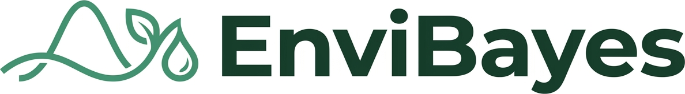

The EnviBayes–INLA Workshop 2027 is the first joint meeting between the EnviBayes and INLA workshop series, bringing together researchers developing Bayesian methods for environmental, ecological, spatial and spatio-temporal statistics. The programme will feature keynote lectures, contributed talks, poster sessions, and hands-on tutorials, covering a broad range of topics including INLA, spatial modelling, extreme value analysis, climate and weather, ecology, epidemiology, and environmental applications. The workshop builds on the success of previous EnviBayes workshops (2023, 2025) and the INLA: Past, Present and Future workshop, creating a unique opportunity for collaboration between these two vibrant research communities.
Activities Overview
- Two pre-conference tutorials
- Keynote talks
- Contributed talks
- Poster session
- Welcome reception
- Social event
- Awards
Abstract Submission
Please submit your details for a contributed talk or poster using the following link. Abstract submission will close on 31\(^\text{st}\) of January 2027.
Registration
Information about registration will be added here soon.
Important Dates
Contributed Talks & Posters Submission
- Open: 8\(\text{th}\) October 2026
- Close: 31\(\text{st}\) January 2027
Registration
- Early Bird Opens: November 2026
- Early Bird Closes: February 2027
- Standard registration Closes: April 2027
Registration Cost
The registration fee includes access to the workshop, coffee breaks, lunch, a welcome reception, and social event. Tutorials are subject to a separate fee, as indicated below.
Non-Students
- Early bird: £250.00
- ISBA member: £250.00
- Regular: £300.00
- Tutorials(\(^\star\)): £30.00
Students
- Early bird: £175.00
- ISBA member: £175.00
- Regular: £200.00
- Tutorials(\(^\star\)): £15.00
(\(^\star\)) price per tutorial
Please note: Student fees are provisional and subject to confirmation of external funding. We expect to offer the rates shown above and will confirm these with registered students once funding arrangements are finalised.
Sponsors
We gratefully acknowledge the support of the International Society for Bayesian Analysis (ISBA) and its Section on Environmental Sciences (EnviBayes), whose contributions help us support student and early-career researcher participation in EnviBayes-INLA 2027.


Contact
Questions about the conference? Join the discussion on GitHub or contact the organisers at envibayes-inla-registration@glasgow.ac.uk.